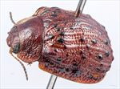
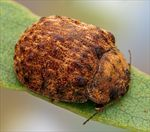
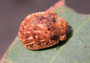
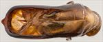
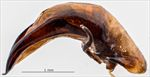
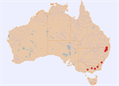

Click on images to enlarge

Female, Boonoo Boonoo, N.E. New South Wales

Female, Tolmie, Victoria

Female, Guyra, N.E. New South Wales

Aedeagus, dorsal view (Wilsons Downfall, N.E. New South Wales)

Aedeagus, lateral view (Wilsons Downfall, N.E. New South Wales)

Distribution (pale-coloured circles indicate records obtained from iNaturalist)
Ta05
Name
Trachymela montuosa (Blackburn)
Reference specimen
2006-122a, Wilsons Downfall, NE NSW
Adult Description
Length: ♂ 7.5–8.6 mm (n=15), ♀ 7.6–9.3 mm (n=37).
Colouration:
Head: uniformly mid-brown to dark brown with black-tipped mandibles; antennomeres 1–4 straw-brown, then grading to a darker shade, with antennomeres 8–11 very dark brown or black.
Pronotum: uniformly brown, concolorous with head.
Scutellum: brown, concolorous with pronotum, broadly edged in a slightly or considerably darker shade of brown.
Elytra: brown, concolorous with pronotum, surface scattered with prominent wart-like elevations that are darker to much darker than surrounding area (rarely black); punctures concolorous with interstices; humeral callus rarely darker than surrounding area.
Venter & Legs: dark reddish-brown, grading towards much darker shade (even black) away from sides and on legs, inside surface of elytral epipleura brown.
Cuticular Wax: sparse to dense layer of orange-brown cuticular wax, often patchily distributed, with small greyish streaks frequently present between the verrucae, particularly in rows VR3, VR5, VR7 and VR9.
Morphology:
Head: punctures moderately large (pd to 2×ef), densely and evenly to very slightly unevenly distributed. Antennae moderately long (AL/BL: ♂ 41–46%, ♀ 37–40%), filiform.
Pronotum: almost evenly curved in centre with sides slightly to moderately explanate; foveal depression very indistinct or absent; punctures on disc variable, sometimes quite deeply impressed and well defined, more frequently shallow and smaller, sometimes partially obliterated by rugose surface of disc, often not uniform in size, becoming much more coarse at lateral margins. Front margins join lateral margins in a smoothly rounded right-angle, with lateral margin curving smoothly and gradually towards rear margin.
Scutellum: unpunctured, front edge level with front edges of elytra.
Elytra: surface unevenly curved with a distinct broad, shallow depression extending from just below elytral summit towards the discal margin; punctures distinct and relatively large, closely spaced and mostly evenly distributed over most of surface, except where prominent, longitudinal, thickened interstices are present on most specimens; interstices generally lacking smaller punctures; elevated, prominent and usually dark verrucae are scattered over most of surface except transverse depression; transverse raised interstices may connect some of these, particularly those bordering the posterior edge of transverse depression, thus appearing as a raised lateral ridge; humeral callus prominent with surface below it separated by a distinct groove. Vertical extension of epipleura moderate (HCE/PW = 0.35–0.41), inner edge with a line of short setae posteriorly, as far forward as anterior edge of 4th abdominal segment.
Venter: prosternal process subparallel, closed anteriorly, a scatter of setae present along prosternal process and on mesoventrite; one or two long setae on anterior trochanter, one on each median and posterior trochanter; front edge of metaventrite beveled, truncate; inner edge of posterior of epipleurae with a row of short setae.
Male Genitalia (Aedeagus):
Dimensions: large (LPE = 32–35% BL).
Dorsal view: sides slightly sinuate, narrowing slightly from junction with basal section to about middle, then broadening slightly to posterior of ostium before narrowing again to converge at the apex; dorsal surface smoothly curved behind ostium with dorso-median channel present; spatula small with tip protruding; ostium broad, flanked posteriorly by the curved edges of dorsal ostial processes, short dorso-lateral channels present.
Lateral view: almost evenly curved throughout its length, thickest around the centre, tip deflexed.
Immature Stages
Unknown.
Similar species
Ta17: structurally this species is quite similar, though considerably smaller in size and the verrucae are usually less conspicuous due to being concolorous with the elytral surface.
Ta56: this species is similar in size and shares the quite prominent verrucae in similar positions; it differs by the finer puncturation on the elytra and the very different form of aedeagus.
Notes
Taxonomy: This is almost certainly the species described by Blackburn as Trachymela montuosa (Blackburn, 1896), by comparison with the type specimen and his description.
Host Associations: All specimens of Ta05 have been collected from monocalypts (Eucalyptus subg. Eucalyptus). Most commonly (16 of 35 records) it is found on stringybarks (Eucalyptus sect. Capillulus), including E. caliginosa. There are 8 records from E. andrewsii and 1 from E. pauciflora (both Eucalyptus sect. Cineraceae). Other recorded hosts are E. radiata (Eucalyptus sect. Aromatica) with 3 records, an unidentified peppermint (1 record) and E. obliqua (Eucalyptus sect. Eucalyptus) with 1 record.
Morphological Variation: The colour of this species is rather variable, with many specimens quite light brown, though occasional specimens are much darker.
Population Structure: The sex ratio is strongly skewed towards females, with only 15 of the 54 specimens collected being males (p < 0.01, Exact Binomial Test).
Copyright © 2026. All rights reserved.
{kind=link}
{kind=link}
{kind=link}
{kind=link}
{kind=link}
{kind=link}